明教丽天＆月亮大恒星列传
#1 明教丽天＆月亮大恒星列传 作者：月光公主 发表时间：2012-1-19 9:10:43
由明教花影教主提议，能让大家关注大恒星，关注妖刀。在新年到来之际给大家展现我们明教大恒星研究情况
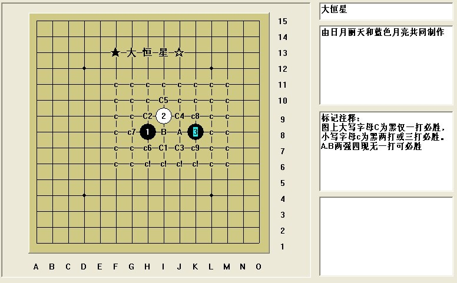
大恒星为平衡妖刀，强四一打黑稍优，此图为大恒星谱图片，此谱由明教日月丽天和蓝色月亮共同努力制作，同时一些难点变化得到明教诸教友的帮助指点和明教众教友的大力支持，在此感谢！我们的大恒星即是属于明教的妖刀之一，每一个地毯强四都由我们努力突破和率先地毯，大恒星版权归明教所有。
为了让大家在此图更清晰的看到大恒星最新进展情况，图上大写字母C为黑仅一打必胜，小写字母c为黑两打或三打必胜。A.B两强四现无一打可必胜
在此先祝大家新年快乐，龙年吉祥！
、
［ 失落刀 于 2012-1-19 9:30:15 时奖励此帖[金币加 100 威望加1］
［ 失落刀 于 2012-1-19 9:33:32 时奖励此帖[金币加 100 威望加1］
［ 日月丽天 于 2012-1-19 9:47:31 时花20金币送鲜花一朵］
［ 黄药师 于 2012-1-19 10:27:34 时花20金币送鲜花一朵］
［ 逆刃 于 2012-1-19 11:58:10 时花20金币送鲜花一朵］
［ 静燕思 于 2012-1-19 14:01:22 时花20金币送鲜花一朵］
［ 静燕思 于 2012-1-19 14:01:38 时花20金币送鲜花一朵］
［ 静燕思 于 2012-1-19 14:01:55 时花20金币送鲜花一朵］
［ 静燕思 于 2012-1-19 14:02:12 时花20金币送鲜花一朵］
［ 静燕思 于 2012-1-19 14:02:58 时花20金币送鲜花一朵］
［ 静燕思 于 2012-1-19 14:03:07 时花20金币送鲜花一朵］
［ 青蛙公主 于 2012-1-19 14:07:47 时花20金币送鲜花一朵］
［ 青蛙公主 于 2012-1-19 14:08:27 时花20金币送鲜花一朵］
［ 青蛙公主 于 2012-1-19 14:08:45 时花20金币送鲜花一朵］
［ 小帮帮 于 2012-1-19 14:28:03 时花20金币送鲜花一朵］
［ 小帮帮 于 2012-1-19 14:28:27 时花20金币送鲜花一朵］
［ 微微一笑 于 2012-1-19 18:19:34 时花20金币送鲜花一朵］
［ 微微一笑 于 2012-1-19 18:19:36 时花20金币送鲜花一朵］
［ 微微一笑 于 2012-1-19 18:19:38 时花20金币送鲜花一朵］
［ 微微一笑 于 2012-1-19 18:19:40 时花20金币送鲜花一朵］
［ 微微一笑 于 2012-1-19 18:19:43 时花20金币送鲜花一朵］
［ 侯军学棋 于 2012-1-19 19:07:35 时花20金币送鲜花一朵］
［ 空恨社小仙 于 2012-1-19 22:46:27 时花20金币送鲜花一朵］
［ 空龙 于 2012-1-20 8:38:07 时花20金币送鲜花一朵］
［ 汪汪 于 2012-1-20 20:26:41 时花20金币送鲜花一朵］
［ 汪汪 于 2012-1-20 20:30:20 时花20金币送鲜花一朵］
［ 紫露雨荷 于 2012-1-21 20:06:28 时花20金币送鲜花一朵］
［ 紫露雨荷 于 2012-1-21 20:37:17 时花20金币送鲜花一朵］
［ 紫露雨荷 于 2012-1-21 20:37:26 时花20金币送鲜花一朵］
［ 紫露雨荷 于 2012-1-21 20:37:44 时花20金币送鲜花一朵］
［ 紫露雨荷 于 2012-1-21 20:37:56 时花20金币送鲜花一朵］
［ 日月丽天 于 2012-1-23 13:44:05 时花20金币送鲜花一朵］
［ 日月丽天 于 2012-1-23 13:44:22 时花20金币送鲜花一朵］
［ 日月丽天 于 2012-1-23 13:44:43 时花20金币送鲜花一朵］
［ 静燕思 于 2012-1-23 18:34:25 时花20金币送鲜花一朵］
［ 静燕思 于 2012-1-23 18:34:34 时花20金币送鲜花一朵］
［ 静燕思 于 2012-1-23 18:34:43 时花20金币送鲜花一朵］
［ 静燕思 于 2012-1-23 18:34:52 时花20金币送鲜花一朵］
［ 静燕思 于 2012-1-23 18:35:00 时花20金币送鲜花一朵］
［ 静燕思 于 2012-1-23 18:35:09 时花20金币送鲜花一朵］
［此帖子已被 日月丽天 在 2013-7-26 14:22:10 编辑过］
#2 Re:明教丽天＆月亮大恒星列传 作者：日月丽天 发表时间：2012-1-19 9:25:11
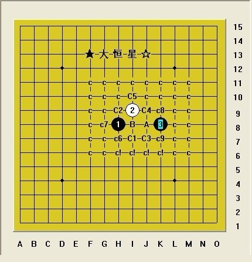
此大恒星谱由于AB两强四尚未有一打黑必胜，为对此刀整个开局的负责，暂且不直接发谱，同时我们自始至终在为A，B两点强四的研究做不懈的努力，如果有朝一日其中任何一个强四能完成黑一打完美必胜，我们将向大家公布我们的明教刀谱之大恒星全谱.....
我们将依次给大家介绍每个中强四地毯情况，希望大家关注大恒星，关注妖刀。
在此祝大家新年快乐，祝愿我中华之五子棋明天更美好！
［ 失落刀 于 2012-1-19 9:30:43 时奖励此帖[金币加 100 威望加1］
［ 失落刀 于 2012-1-19 9:33:48 时奖励此帖[金币加 100 威望加1］
［ 青蛙公主 于 2012-1-19 14:07:17 时花20金币送鲜花一朵］
［ 被感动的人 于 2012-1-19 18:24:28 时花20金币送鲜花一朵］
［ 被感动的人 于 2012-1-19 18:24:54 时花20金币送鲜花一朵］
［ 被感动的人 于 2012-1-19 18:24:56 时花20金币送鲜花一朵］
［ 被感动的人 于 2012-1-19 18:24:57 时花20金币送鲜花一朵］
［ 被感动的人 于 2012-1-19 18:25:00 时花20金币送鲜花一朵］
［ 侯军学棋 于 2012-1-19 19:07:18 时花20金币送鲜花一朵］
［此帖子已被 潇洒 在 2012-1-19 21:58:03 编辑过］
［ 空恨社小仙 于 2012-1-19 22:46:59 时花20金币送鲜花一朵］
［ 汪汪 于 2012-1-20 20:27:12 时花20金币送鲜花一朵］
［ 汪汪 于 2012-1-20 20:30:39 时花20金币送鲜花一朵］
［ 悠悠紫叶情 于 2012-1-28 20:14:58 时花20金币送鲜花一朵］
［ 悠悠紫叶情 于 2012-1-28 20:15:20 时花20金币送鲜花一朵］
［ 悠悠紫叶情 于 2012-1-28 20:15:42 时花20金币送鲜花一朵］
［ 悠悠紫叶情 于 2012-1-28 20:16:06 时花20金币送鲜花一朵］
［ 悠悠紫叶情 于 2012-1-28 20:16:21 时花20金币送鲜花一朵］
［ 茗弈初学者 于 2012-1-29 11:04:24 时花20金币送鲜花一朵］
［ 茗弈初学者 于 2012-1-29 11:04:26 时花20金币送鲜花一朵］
［ 茗弈初学者 于 2012-1-29 11:04:28 时花20金币送鲜花一朵］
［ 茗弈初学者 于 2012-1-29 11:04:30 时花20金币送鲜花一朵］
［ 茗弈初学者 于 2012-1-29 11:04:31 时花20金币送鲜花一朵］
［ 茗弈初学者 于 2012-1-29 11:04:33 时花20金币送鲜花一朵］
［ 茗弈初学者 于 2012-1-29 11:04:34 时花20金币送鲜花一朵］
［ 茗弈初学者 于 2012-1-29 11:04:36 时花20金币送鲜花一朵］
［ 郎情 于 2012-2-1 14:47:51 时花20金币送鲜花一朵］
［ 郎情 于 2012-2-1 14:47:57 时花20金币送鲜花一朵］
［ 郎情 于 2012-2-1 14:57:20 时花20金币送鲜花一朵］
［ 郎情 于 2012-2-1 14:57:24 时花20金币送鲜花一朵］
［ 郎情 于 2012-2-1 14:57:27 时花20金币送鲜花一朵］
［ 青蛙公主 于 2012-2-11 15:13:05 时花20金币送鲜花一朵］
#3 Re:明教丽天＆月亮大恒星列传 作者：月光公主 发表时间：2012-1-19 9:30:57
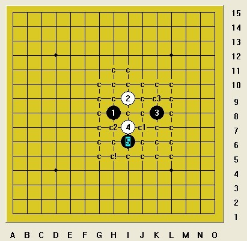
这个四，可以算是地毯完成中的最强四，目前只有一打五可必胜，我们地毯于去年春天。c1点6地毯起来较为有难度。同时希望大家能共同为这个四的第二打努力。
［此帖子已被 月光公主 在 2012-1-19 9:36:37 编辑过］
#4 Re:明教丽天＆月亮大恒星列传 作者：月光公主 发表时间：2012-1-19 9:41:41
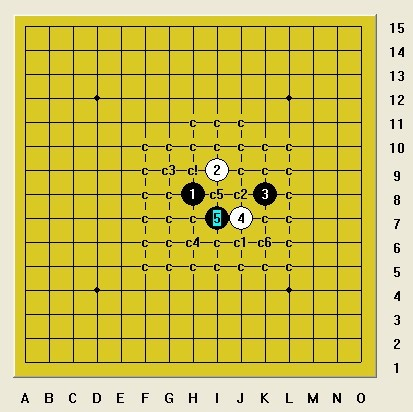
这个四是大恒星卦点四，同样只有一打可必胜，c1和c2地毯起来各有些巧妙，她的对称点5由于盘端问题还有一个6还尚不能地毯！同时希望大家关注二打。
［ 潇洒 于 2012-1-24 11:31:14 时奖励此帖[金币加 100 威望加1］
［ 青蛙公主 于 2012-2-11 15:14:37 时花20金币送鲜花一朵］
#5 Re:明教丽天＆月亮大恒星列传 作者：自来水 发表时间：2012-1-19 9:54:13
- -前来观摩一下#6 Re:明教丽天＆月亮大恒星列传 作者：小元 发表时间：2012-1-19 11:55:53
solver的时代果然强大#7 Re:明教丽天＆月亮大恒星列传 作者：日月丽天 发表时间：2012-1-19 12:52:27
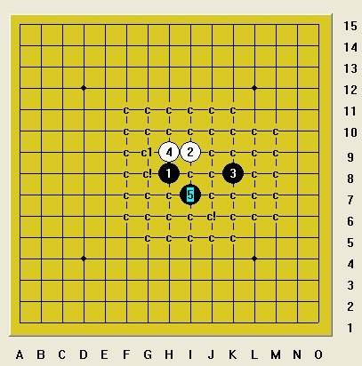
这个通金星刀的强四同样目前只有一打黑必胜，当时我们地毯于2010年秋天于金星刀上，前后地毯了有一个多月，这其中得到空龙教主的付出，在此特别感谢。
最后的必胜走法不可思议，同时亲手将金星刀一打黑必胜推向唯一四！再次希望大家关注此四的的二打
［ 青蛙公主 于 2012-2-11 15:15:01 时花20金币送鲜花一朵］
#8 Re:明教丽天＆月亮大恒星列传 作者：小帮帮 发表时间：2012-1-19 14:41:20
太强大了，巾帼不让须眉啊#9 Re:明教丽天＆月亮大恒星列传 作者：月光公主 发表时间：2012-1-19 17:20:45
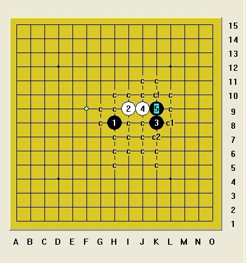
此四为对称两打胜，欢迎大家做出非对称必胜打点
［ 青蛙公主 于 2012-2-11 15:13:58 时花20金币送鲜花一朵］
#10 Re:明教丽天＆月亮大恒星列传 作者：被感动的人 发表时间：2012-1-19 18:25:51
支持一下~
另：2楼的棋盘好漂亮哇~
#11 Re:明教丽天＆月亮大恒星列传 作者：侯军学棋 发表时间：2012-1-19 19:08:34
2楼的大师棋谱带发光的
#12 Re:明教丽天＆月亮大恒星列传 作者：汪汪 发表时间：2012-1-20 20:29:04
强人！

#13 Re:明教丽天＆月亮大恒星列传 作者：空恨社小仙 发表时间：2012-1-20 20:57:29
 好强大，好崇拜，我是你们的纷丝。。。。。。
好强大，好崇拜，我是你们的纷丝。。。。。。
［此帖子已被 空恨社小仙 在 2012-1-20 21:01:12 编辑过］
#14 Re:明教丽天＆月亮大恒星列传 作者：紫露雨荷 发表时间：2012-1-21 20:16:17
月亮，聪明
#15 Re:明教丽天＆月亮大恒星列传 作者：冥王哈迪斯 发表时间：2012-1-22 23:09:27
~ 看着两位 日益强大，希望 两位能 继承逆刃大哥的 意志 将妖刀进行到底，将地毯进行到底！向两位致敬！---冥王！#16 Re:明教丽天＆月亮大恒星列传 作者：侯军学棋 发表时间：2012-1-23 17:50:02
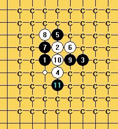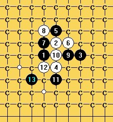这个5差两个14一下杀不出#17 Re:明教丽天＆月亮大恒星列传 作者：静燕思 发表时间：2012-1-23 18:33:33
 蓝色月亮你们好帅呀！！！让我羡慕，妒忌！
蓝色月亮你们好帅呀！！！让我羡慕，妒忌！#18 Re:明教丽天＆月亮大恒星列传 作者：侯军学棋 发表时间：2012-1-27 11:14:14
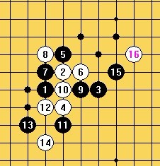请教17在哪里？#19 Re:明教丽天＆月亮大恒星列传 作者：郎情 发表时间：2012-1-28 14:29:47
 嘻嘻
嘻嘻
#20 Re:明教丽天＆月亮大恒星列传 作者：郎情 发表时间：2012-1-28 14:31:36
===================================
本区域内容需要威望值≥10才可见!
===================================
===================================
本区域内容需要威望值≥10才可见!
===================================
#21 Re:明教丽天＆月亮大恒星列传 作者：郎情 发表时间：2012-1-28 14:32:13
大家新年好 我要申请威望［ 失落刀 于 2012-1-28 14:34:29 时奖励此帖[金币加 100 威望加1］0+1
［此帖子已被 失落刀 在 2012-1-28 14:34:51 编辑过］
#22 Re:明教丽天＆月亮大恒星列传 作者：悠悠紫叶情 发表时间：2012-1-28 20:21:00
感谢LZ分享目前进展，祝你们新的一年，地毯顺利完成#23 Re:Re:明教丽天＆月亮大恒星列传 作者：五子棋爱好者细雨 发表时间：2012-1-28 20:31:06
引用：
原文由 小元 发表于 2012-1-19 11:55:53 :
solver的时代果然强大
#24 Re:明教丽天＆月亮大恒星列传 作者：茗弈初学者 发表时间：2012-1-29 11:11:38
虽然我水平还够不到刀，不过强烈支持我们的同志为五子棋做出的努力和贡献，期待更多的人为五子棋发展提供这样的支持！再次感谢月光公主和日月！
#25 Re:明教丽天＆月亮大恒星列传 作者：日月丽天 发表时间：2012-2-5 9:21:51
介绍几个大恒星常见四，3打必胜情况
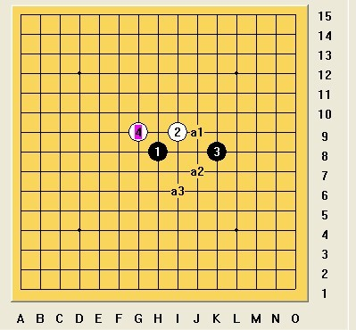
大恒星这个四和大明星相通，在曾经的很多大明星谱上有已知两个打，1，2打难度都不算太大，3打5复杂，现已可以3打必胜了
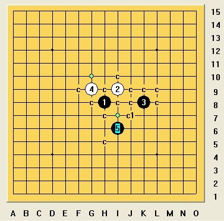
这个打的特别性，是可以通常规岚月强四2打必胜，地毯起来比较复杂，全盘地毯大概需要八千kb左右
［ 失落刀 于 2012-2-5 15:01:06 时奖励此帖[金币加 100 威望加1］
#26 Re:明教丽天＆月亮大恒星列传 作者：侯军学棋 发表时间：2012-2-14 11:24:50
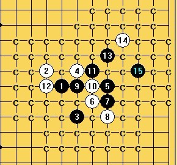谢谢日月的指点 我这里怎么通名月了
#27 Re:侯军学棋【==Re:明教丽天＆月亮大恒星列传==】 作者：空恨社小仙 发表时间：2012-2-15 0:17:02
这个755kb的名岚二打应该也算是全盘地毯了
 名岚2打.rar
名岚2打.rar
#28 Re:明教丽天＆月亮大恒星列传 作者：日月丽天 发表时间：2012-2-15 10:33:43
我上面发的3打图是整理后简化的只有24kb左右，谱越太越大，就需要有些变化能简化到最小是最方便的了。
我们的大恒星谱是从0开始的.......
［此帖子已被 日月丽天 在 2012-2-15 10:54:11 编辑过］
#29 Re:月光公主【==明教丽天＆月亮大恒星列传==】 作者：雄鹰王 发表时间：2013-10-26 14:07:33
大恒星强四（A）一个黑败打点：
前两天研究峡月打点的时候，解决了一个5，也顺便解决了大恒星强4（A点）的一个黑棋必败的打点，见下图：
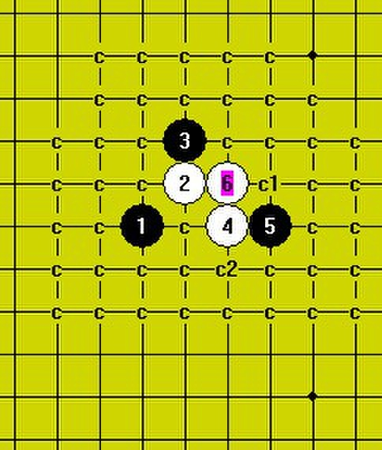
该峡月局败5共通大恒星：1-2-5-4-3-6，图中的3是黑必败的打点，白棋必胜。
［ 日月丽天 于 2013-10-26 14:09:09 时奖励此帖[金币加 100 威望加1］
#30 Re:明教丽天＆月亮大恒星列传 作者：日月丽天 发表时间：2013-10-26 14:14:49
做的不错，一举两得，得相通之道就得研究之道。